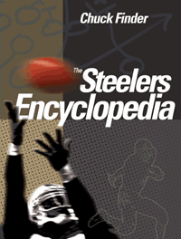

<body bgcolor="#FFFFFF" text="#000000" link="#0000FF" vlink="#CC0000" alink="#CC0000"><center><hr width="350" size="1" align="center" noshade>The definitive history of the Pittsburgh Steelers<hr width="350" size="1" align="center" noshade><p><a href="https://cdcshoppingcart.uchicago.edu/Cart/ChicagoBook.aspx?ISBN=9781439908327&&PRESS=temple" target="_top">Buy this book!</a> | <a href="https://cdcshoppingcart.uchicago.edu/Cart/Cart.aspx?PRESS=temple" target="_top">View Cart</a> | <a href="https://cdcshoppingcart.uchicago.edu/Cart/Cart.aspx?PRESS=temple" target="_top">Check Out</a></p><p></p></center><!--none//--><h1>The Steelers Encyclopedia</h1>
<h3>Chuck Finder</h3>
<P>cloth 1-4399-0832-X $35.00, Sep 12, <FONT COLOR=#990033>Available</FONT>
<BR> 360 pp
8.3125x10.875
302&nbsp;tables 209&nbsp;halftones
</P><BLOCKQUOTE><I>"</I>The Steelers Encyclopedia<I> could have easily been titled </I>Finder’s Keepers<I>. Chuck Finder has woven together a crystalline presentation of Steelers lore that will draw in even the most casual fan. For the Steelers' maniacal fandom, these stories and quotes are a can’t–put–down gathering of Black and Gold facts representing the good and bad about the most endearing pro sports franchise. Go Steelers!"</I><br>&#151<b>Bill Hillgrove</b>, Play-By-Play, Pittsburgh Steelers <I></I></BLOCKQUOTE>
<P>The pitiful Pittsburgh Pirates, established in 1933 by the inimitable "Chief," Art Rooney Sr. defied both belief and the odds by becoming the six-time Super Bowl champions that the Pittsburgh Steelers are today. They began as the woebegone Pirates, then degenerated into the Same Old Steelers, the Steagles, and the Car-Pitts, but wound up one of professional sports' most iconic franchises.
<p>In <i>The Steelers Encyclopedia</i>, veteran sportswriter Chuck Finder nimbly chronicles this remarkable team from conception to Immaculate Reception to today. From turnovers to the Terrible Towel, Finder interviews nearly 100 ex-Steelers, coaches, front-office personnel, and fans, and includes more than 150 photographs&#8212;many of them never published before.
<p>In <i>The Steelers Encyclopedia</i>, fans will read about wild behind-the-scenes tales such as:
<ul><li><p> Jack Lambert, the gap-toothed linebacker considered the game's scariest player, screaming down a hallway clad in his undies, boots, and cowboy hat because he was afraid of a teammate's prank snake
<li><p> One Super Bowl team making an unscheduled pit stop because they, um, imbibed too many celebratory refreshments after leaving the stadium
<li><p> Driving with the club's legendary founding father, Art Rooney Sr., to his day job&#8212;the horse track</ul>
<p>Get a look at the stars, the games, and the franchise:
<ul><li><p> New details about the Rooneys, the sale of their team, the difficult times and decisions they faced in surviving, then thriving
<li><p> Characters ranging from bonus-baby Byron "Whizzer" White, a future U.S. Supreme Court Justice, to league MVPs Bill Dudley and Terry Bradshaw
<li><p>The parade of Hall of Fame ex-Steelers that continues in 2012 with Dermontti Dawson and Jack Butler . . . and includes one Canton honoree who was almost moved to a different position and another whose career took off upon ditching his glasses for contacts
<li><p> The man who wrote the Steelers polka, the kid who named the Steel Curtain, and the first weightlifting coach of the Super Steelers
<li><p> The nasal voice that provided the team's historic soundtrack and belonged to the inventor of the Terrible Towel, Myron Cope</ul>
<p>Learn the Steelers by the numbers:
<ul><li><p> A year-by-year history of the team from 1933 to the present, with stats from each season
<li><p> Chapters about each Super Bowl and the scouting staff responsible for building champions, including tales from inside the draft war room
<li><p> Individual profiles of every Steelers head coach and more than 100 Steelers players&#8212;from Jerome Bettis to Rod Woodson
<li><p>The cheerleaders&#8212;both female and male</ul>
<p>For everyone who lives in Steeler Nation, this is the most comprehensive history of football's most beloved franchise, the Black and Gold.
<p>DISCLAIMER: THIS BOOK IS NOT SANCTIONED BY THE NFL OR ITS TEAMS.
<BR>&nbsp;<h2>Excerpt</h2><P>Excerpt available at <a href="http://www.temple.edu/tempress">www.temple.edu/tempress</a></p>
<BR>&nbsp;<h2>Reviews</h2>
<p><i>"Without question, an essential read for any Steelers fan of any age."</i> <br>&#151<b>Entrepreneur and Pittsburgh native Mark Cuban</b>
<p><i> "[A] detailed, in-depth, comprehensive history of one of the National Football League's most celebrated franchises."</i> <br>&#151<b><i>The Latrobe Bulletin</i></b>
<p><i>"[Finder, a] former Post-Gazette sports writer is a meticulous researcher and interviewer, and you will find both in this coffee-table tome... The stories, though, are [the book's] backbone, and Finder always has been a good storyteller."</i><br>&#151<b>
<i>The Pittsburgh Post-Gazette</i></b>
<p><i> "It's an informative book that any Steelers fan should appreciate."</i> <br>&#151<b><i>Beaver County Times</i></b>
<p><i>"Chuck Finder’s </i>The Steelers Encyclopedia<i> is the perfect guide to have at the ready next time you need to settle an argument before half-time ends. A giant compendium of stats, player biographies, schedules and photos, this book should be in every serious fan’s home."</i> <br>&#151<b><i>Pittsburgh Magazine</i></b>
<p><i>"Is there anyone more qualified than former PG sports writer Chuck Finder to chronicle the Steelers in all of their labyrinthine history? Maybe, but for now, Mr. Finder's book is the most definitive and authoritative resource for all things Stillers [sic]."</i> <br>&#151<b>Tony Norman, <i>The Pittsburgh Post-Gazette</i></b>
<BR>&nbsp;<h2>Contents</h2><P>
<p>Acknowledgments
<br>1. Beginnings (1933–1947)
<br>2. The Owners
<br>3. Generation Lost (1948–1968)
<br>4. The Coaches
<br>5. Scouting
<br>6. The Man and His Towel
<br>7. The Players
<br>8. The Super ’70s
<br>9. The Super Bowls
<br>10. The Hall of Fame
<br>11. The Super Second Generation (1980– )
<br>12. Steelers Nation
<br>13. Stadia
<br>14. Sidelines
<br>Appendix: Statistics
</P><BR>&nbsp;<H2>About the Author(s)</H2>
<P><b>Chuck Finder</b> was a sportswriter and columnist at the <i>Pittsburgh Post-Gazette</i> for 25 years, covering the Steelers in Super Bowls XXX, XL, and XLIII. He also served as a correspondent to CBSSports.com and the <i>New York Times</i>. A contributor to several books about Pittsburgh and Pennsylvania sports, he has also worked for the <i>Birmingham News</i> and the <i>Atlanta Journal-Constitution</i>.</P>
<BR><H2>Subject Categories</H2>
<p><A HREF="/tempress/sports.html" TARGET="_top">Sports</a>
<BR><A HREF="/tempress/general.html" TARGET="_top">General Interest</a>
<BR><A HREF="/tempress/history.html" TARGET="_top">History</a>
</p>
<p align="center"><a href="https://cdcshoppingcart.uchicago.edu/Cart/ChicagoBook.aspx?ISBN=9781439908327&&PRESS=temple" target="_top">Buy this book!</a> | <a href="https://cdcshoppingcart.uchicago.edu/Cart/Cart.aspx?PRESS=temple" target="_top">View Cart</a> | <a href="https://cdcshoppingcart.uchicago.edu/Cart/Cart.aspx?PRESS=temple" target="_top">Check Out</a></p><p><font face="Arial" size="1"><a href="copyright.html" onMouseOver="window.status='Web Copyright Policy';return true;" onMouseOut="window.status=''" title="Web Copyright Policy">&copy;</a> 2015 <a href="http://www.temple.edu" target="new" onMouseOver="window.status='Link to Temple University home page';return true;" onMouseOut="window.status=''" title="Link to Temple University home page">Temple University</a>. All Rights Reserved. http://www.temple.edu/tempress/titles/2194_reg.html</font></p>